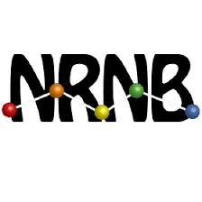

|
I am a masters student in the CSE Department at UC San Diego since Fall' 21.
I am currently doing a software engineering internship at Google in Google Ads ML team.
Previously I worked as a Graduate student assistant (software developer) under the guidance of Prof. Yoav Freund and Prof. David Kleinfeld in Neurophysics department at UC San Diego.
I have completed my undergraduate degree in Computer Science from IIIT-Hyderabad in 2020, with honors in Computer Vision, advised by Prof. P.J. Narayanan
I have an year of experience working as a software development engineer at Amazon and Adobe. At Amazon I was in the grocery team where I worked on developing a precompute system from scratch using AWS infrastructure used for retrieving product data to serve low latency widgets on Amazon Fresh.
I have also completed my internship at Adobe Inc in Bangalore as an undergraduate machine learning intern, where I built an app extension recommendation engine for Adobe Exchange Platform
I have experience in a variety of programming languages and frameworks.
- Programming Languages: C++, Python, Java, C, HTML, CSS, Javascript, TypeScript, Go
- Libraries and Tools: AWS, Django, React, Pytorch, Tensorflow
- Relevant courses: Computer Programming, Data structures, Algorithms, Software Engineering, Operating Systems, Computer Networks, Computer Vision, Database systems, Distributed Systems, Optimization Methods, Artificial Intelligence, Machine Learning
I am currently looking for full-time software engineer roles starting in 2023, so if you have a position available or just want to say hi, you can always mail me.
CV /
Github
|
|

|
Google
Software Engineering Intern at Google Ads
Mountain View, CA, USA · June 2022 - Sept 2022
Designed and developed data processing pipelines for multiple click-to-conversion ratio prediction ML models using a MapReduce based framework. Made the pipelines scalable, extensible and fault-tolerant for multiple models and gained significant performance gain. Currently working on integrating an end-to-end pipeline management system for automating various pipeline tasks.
Impact: Previous approaches were not fault-tolerant and scalable and caused training workflow errors as the data processing pipeline is upstream for model training. Minimized the rate of training workflow failures by almost 30% and gained 50% performance. improvement in training data generation process.
Technologies: C++, Flume (MapReduce framework), SQL
|
|

|
Amazon
Software Development Engineer at Amazon Fresh
Bangalore, India · Dec 2020 - Aug 2021
Engineer in Customer Experience team of Amazon Fresh (world wide grocery delivery service), goal is to build software to recommend grocery items to users on Amazon web pages. Designed, developed and released a scalable and extensible precompute system from scratch using AWS infrastructure to compute product data required for multiple recommendation projects across Amazon Fresh.
Developed a recommendation widget titled “Savings Maximizer” providing product recommendation with lowest price per unit, customer brand preference at millisecond latency, enabling customers to maximise their savings in grocery purchase.
Impact: Extensibility of precompute system helped in driving Supersaver, Inline upsell, Savings maximizer recommendation projects to success, saving an effort of approximately 3 months for each project. Savings Maximizer widget helps the customers to maximize their savings by recommending items with lowest price per unit and is estimated to create significant increase in order product sales in terms of revenue for Amazon Fresh.
Technologies: Java, AWS, Typescript
|
|
|
|
Adobe
Software Development Engineer at Adobe Acrobat Web
Noida, India · Aug 2020 - Dec 2020
Engineer in the AcrobatJS team at Adobe, goal is to build a fully functional Adobe Acrobat on the web. Worked in the field of mobile optimization, developed zooming capability in slide mode PDF view, onboarded inline search and page scrubber on Acrobat web.
Technologies: React, Javascript, HTML, CSS
|
|
|
|
Adobe
Software, Machine Learning Intern at Adobe Exchange Platform
Bangalore, India · May 2019 - July 2019
Machine learning intern in Adobe Exchange team (exchange.adobe.com). Built a recommendation system to recommend product extensions to customers using a siamese positive-negative pair neural network for Adobe Exchange Platform. Achieved an accuracy of 82 percent in generating recommendations to users. Built a generic model adaptable to different platforms of Adobe. (PPO offered)
Technologies: Python, Tensorflow, Java
|
|

|
University of California San Diego
Graduate Student Assistant (Software Developer) at David Kleinfeld Lab (Neurophysics Department at UC San Diego)
Remote · Jan 2022 - Current
Working under the guidance of Prof. Yoav Freund and Prof. David Kleinfeld in Neurophysics department to extend Google's version of neuroglancer to support polygon and volume annotations, currently only line, point annotations are supported. Neuroglancer is a WebGL-based viewer for displaying arbitrary (non axis-aligned) cross-sectional views of volumetric data. With the addition of polygon annotations, researchers will be able to better identify and represent the cross-sectional areas of interest in the volumetric data and the annotations can in turn be fed to train ML models to automate the process of annotating volumetric data. Github: link
Technologies: Typescript, Javascript, HTML, CSS
|
|
|

|
National Resource for Network Biology (NRNB)
Open Source Developer at GraphSpace
Remote · May 2018 - July 2018
Implemented a real-time comment system similar to google docs comments for GraphSpace platform using concepts of websockets/network programming enabling users to add comments as a means to discuss or share ideas with their collaborators for a given graph.
Blog summarizing my work.
Technologies: Python, Javascript, HTML, CSS
|
|

|
IIIT Hyderabad
Undergraduate Researcher . Teaching Assistant
Hyderabad, India · Aug 2018 - July 2020
Full time honours student at Computer vision lab under the director of IIIT (Prof P.J.Narayanan). Developed an unsupervised algorithm to learn image representation in style space which can be used for image retrieval. Research paper was accepted at WACV 2020. Performed extensive research and developed a system using deep learning to perform view extrapolation on real world images
Teaching assistant for Optimization methods(Spring 20),Operating Systems(Fall 18)and Machine Learning(Fall 19) courses.
Technologies: Python, Javascript, HTML, CSS, Pytorch, Tensorflow
|
|
|
|
UC San Diego
Masters in Computer Science & Engineering · 4.0 / 4.0
San Diego, CA · 2021 - Present
|
|
|
|
IIIT Hyderabad
B.Tech in Computer Science & Engineering · 9.36 / 10.0 (3.8/4.0)
Hyderabad, India · 2016 - 2020
|
|
Deep Image Matting
Implemented a encoder-decoder neural network which implements a procedure to separate the foreground from the background of the image. Project involves using deep learning, computer vision and machine learning concepts to complete the model, train and test it.
Technologies: Python, Pytorch
Github: link
|
|
Multi-class face images classification
Developed algorithms for multi-label classification of face images using dimensionality reduction by performing Principle component analysis. Used ML algorithms such as Naive Bayes and Linear classifier for multi-class classification tasks.
Technologies: Python
|
|
Ultimate tic-tac-toe
Developed a bot using alpha beta heuristic search and minimax algorithm to play tic-tac-toe against other bots or human in a 16 X 16 grid.
Technologies: Python
Github: link
|
|
Breadth-first search in distributed environment
Implemented a breadth-first search in distributed environment using algorithms such as sequential search, parallel search using message passing, 1D partitioning and 2D partitioning techniques. Provided a detailed analysis on each of the algorithms considering different metrics such as time complexity, message space complexity etc.
Technologies: Erlang, Python
Project summary: link
Github: link
|
|
Proxy Server
Implemented a multi-threaded proxy server which servers multiple requests from users using TCP/UDP protocols for file transfer with LRU (least recently used) caching for faster file transfer.
Technologies: Python
Github: link
|
|
Mini Linux Shell
Developed a shell coded in C++ with features like killing a process, input/output redirection, piping etc.
Technologies: C++
|
|
Computer Graphics Game development Projects
Developed games similar to Mario (2D), Legend of Zelda (3D) and Tunnel Rush (3D) using OpenGL (C++) and WebGL (Javascript). Incorporated particle effects, projectile physics and collider mechanics in the games developed.
Technologies: C++
|
|
Thanks to Jon Barron for the nice template!
|